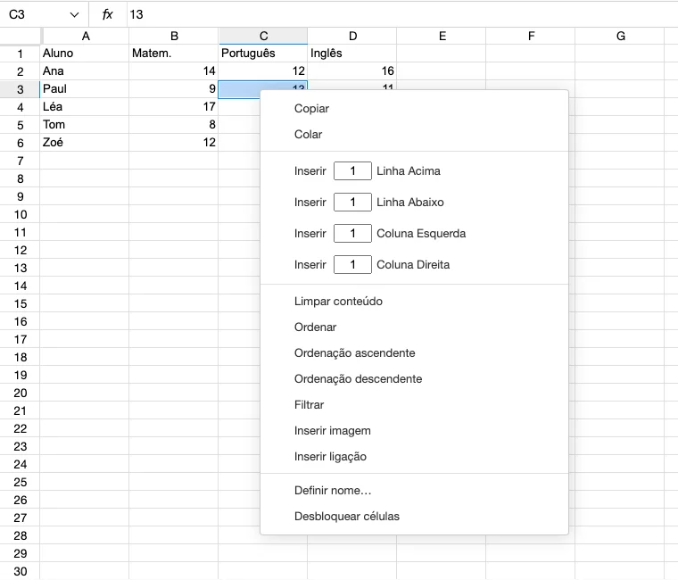

Linhas e colunas
Tamanho
| Ação | Efeito |
|---|---|
| arrastar o limite direito do cabeçalho de uma coluna | muda a sua largura |
| arrastar o limite inferior do cabeçalho de uma linha | muda a sua altura |
| clique direito no cabeçalho › Largura, Altura | tamanho em píxeis, para todas as colunas ou linhas selecionadas |
Inserir, eliminar
Clique direito numa célula ou num cabeçalho: Inserir 1 Linha Acima, Inserir 1 Linha Abaixo, Inserir 1 Coluna Esquerda, Inserir 1 Coluna Direita. O número escreve-se no campo. Clique direito num cabeçalho: Eliminar seleção Linha, Eliminar seleção Coluna.

As fórmulas são ajustadas: as suas referências acompanham as células deslocadas. O limite é de 10 000 linhas e 1 000 colunas.
Ocultar
Clique direito no cabeçalho › Ocultar seleção Linha, Ocultar seleção Coluna. As células ocultas continuam a ser calculadas. Para as voltar a mostrar, selecionar os cabeçalhos à volta, depois clique direito › Mostrar oculto.
Fixar
As linhas e colunas fixadas ficam visíveis durante o deslocamento. Selecionar a célula limite, depois ou Ver › Fixar:
| Comando | Ficam visíveis |
|---|---|
| Fixar até à linha atual | as linhas até à da célula, incluída |
| Fixar até à coluna atual | as colunas até à da célula, incluída |
| Fixar até à célula atual | ambas |
| Cancelar fixação | nada em particular |
Para manter a linha de cabeçalho: clicar numa célula da linha 1, Fixar até à linha atual.